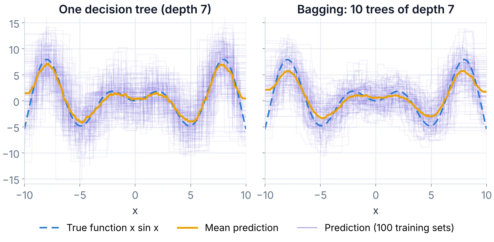
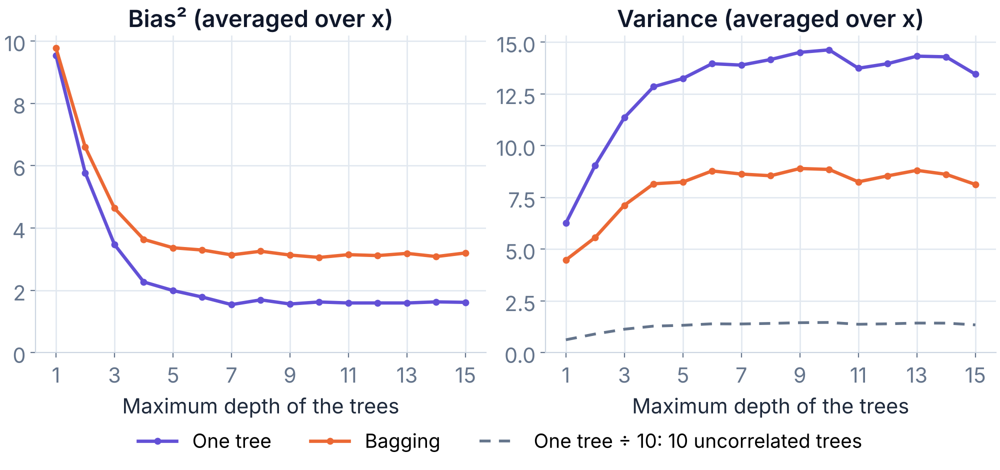

Week 3of 7
Bayesian Networks and Classical Machine Learning
- Episode 5 (We 11/11, 2:15–4:00 PM): Bayesian networks (Indrė)
- Episode 6 (Fr 13/11, 10:15 AM–12:00 PM): Machine learning (Indrė)
Due at your exercise session this week: Week 2 exercises
- Rolling the Dice (1p)
- Bayes rule (1.5p)
- Naive Bayes and Spam (pencil-and-paper) (1p)
- Naive Bayes and Spam (programming) (2.5p)
This week's exercises are due at your exercise session in Week 4.
The Kaggle competition: Customer Churn is separate and does not count towards the weekly points. You can keep submitting until the last lecture (Fr 11/12).
| Theme | Objectives (after the course, you ...) |
| Reasoning under uncertainty |
|
| Classical machine learning |
|
Bayesian networks
As we mentioned above, the naive Bayes model is a kind of a Bayesian network, with an associated graph structure where the class variable is the root and the only "parent" of all the feature variables.
Bayesian networks are a model family which belong to the still more general category of (probabilistic) graphical models, which are a modeling "language" for probabilistic models. The power of graphical models is mainly due to i) their ability to compactly represent multivariate domains with complex dependencies, and ii) efficient inference procedures that exploit the structure of the models.
Building blocks of a Bayesian network
A Bayesian network will represent a joint distribution over a number of random variables. Depending on the complexity of the network (which depends on the number and placement of the edges in the graph), the Bayesian network representation may require significantly fewer numerical parameters than the number of elementary events in the domain.
The structure of the network is encoded as a graph where each random variable is represented as a node, and the dependency structure is characterized by a set of directed edges between the nodes. The graph must be a directed acyclic graph (DAG), which means that it is impossible to start from a node follow a path in the direction of the edges to arrive at the same node.
Here's an example DAG:

The random variables in the model are X, Y, Z, and Å. (For the non-Scandi students, the last one is what we call the "Swedish O" in Finland; see Wikipedia:Å. It conveniently comes after X, Y, and Z in our alphabet.) The edges correspond to direct dependency, so that the absence of an edge between any two variables means that the variables are conditionally independent given some (possibly empty) set of other variables. The details of this are slightly too complicated to discuss here, so we'll not go into them. For now, it is enough to remember that the edges are a way to encode the dependency structure in the domain.
In addition to the structure encoded as the DAG, a Bayesian network comes with a set of parameters quantifying the conditional distributions of the variables. These are given in the form P(V = v \mid \mathrm{Pa}_V = \mathrm{pa}_V), where V is a random variable and v is a value, and \mathrm{Pa}_V denotes the parents of node V in the graph: i.e., the nodes from which there is an edge to V. For example, in the above DAG, we have \mathrm{Pa}_Z = \{X, Y\}, and \mathrm{Pa}_Y = \emptyset because node Y has no parents at all.
When the variables are categorical, i.e., they take values in a finite set, the conditional distributions can be specified as conditional probability tables (CPTs). A CPT for variable V includes the distribution of V for each possible combination of the values of V's parents. We call such combinations parent configurations. For example, if in the above example network, all variables are binary, then the parent configurations of Z are (X=0, Y=0), (X=0, Y=1), (X=1, Y=0), (X=1, Y=1), and the CPT of Z will have four rows, each containing a conditional distribution for Z. A concrete example is as follows
| X | Y | Z = 0 | Z = 1 |
|---|---|---|---|
| 0 | 0 | 0.1 | 0.9 |
| 0 | 1 | 0.2 | 0.8 |
| 1 | 0 | 0.5 | 0.5 |
| 1 | 1 | 0.0 | 1.0 |
So for instance, if X = 1 and Y = 0, then the conditional probability of Z = 1 is given by P(Z = 1 \mid X = 1, Y = 0) = 0.5, and so on.
For a variable that has no parents in the network, the CPT is actually just a single distribution, and the CPT has only one row. For variables that have many parents, the CPT may easily become very very large.
To make things concrete, we use a running example which is the car Bayesian network discussed at the lecture. Its structure is the following:

The variables in the model are abbreviated as the first letters:
- Battery
- Radio
- Ignition
- Gas
- Starts
- Moves
The CPTs are as follows:
| B = 0 | B = 1 |
|---|---|
| 0.1 | 0.9 |
| B | R = 0 | R = 1 |
|---|---|---|
| 0 | 1.0 | 0.0 |
| 1 | 0.1 | 0.9 |
| B | I = 0 | I = 1 |
|---|---|---|
| 0 | 1.0 | 0.0 |
| 1 | 0.05 | 0.95 |
| G = 0 | G = 1 |
|---|---|
| 0.05 | 0.95 |
| I | G | S = 0 | S = 1 |
|---|---|---|---|
| 0 | 0 | 1.0 | 0.0 |
| 0 | 1 | 1.0 | 0.0 |
| 1 | 0 | 1.0 | 0.0 |
| 1 | 1 | 0.01 | 0.99 |
| S | M = 0 | M = 1 |
|---|---|---|
| 0 | 1.0 | 0.0 |
| 1 | 0.01 | 0.99 |
Just to take an example, the car will start (S = 1) with probability 0.99 in case the ignition works (I = 1) and there is gasoline in the tank (G = 1). (No Tesla obviously). If there's a problem either with the ignition or the gasoline, then the car won't start for sure, i.e., P(S = 1 \mid I = i, G = g) = 0.0 for all other combinations (i, g) than (1, 1).
The structure (the DAG) and the parameters in the CPTs are the building blocks of a Bayesian network. Next we discuss how they represent a joint distribution and how they can be used to perform inference about the domain.
Defining a probabilistic model as a Bayesian network
A probabilistic model is really nothing but a joint distribution over the random variables in the domain. The joint distribution defines the probability of each elementary event, which are equivalent to joint value assignments for the random variables. In the car domain, an elementary event is defined by six bits, B, R, I, G, S, M. For example, the event 1, 1, 1, 1, 1, 1 would be a good day: the battery is alive, you listen to some good music, the car starts because you remembered to fill the tank yesterday, and you make it to the lecture in time.
The joint probability of any elementary event is obtained as the product of the conditional probabilities of the form P(V = v \mid \mathrm{Pa}_V = \mathrm{pa}_V), where you'll recall \mathrm{Pa}_V refers to the parent set of V. In the car domain, the product is thus of the form:
where b, r, i, g, s and m denote values of the respective random variables. The above formula is called a factorization of the joint probability.
To make it easier to interpret the events we won't use the rather long notation like B=1,R=1,I=1,G=1,S=1,M=1 or even the shorter notation like 1,1,1,1,1,1 to denote events in the car domain. Rather, we'll have a different label for the values of each of the random variables. For the variable Battery, we denote the good case (battery is alive) by B and the bad case by \neg B. Similarly, for Radio, we denote the good case (music is played) by R, and the bad case by \neg R, and so on.
This is actually slight abuse of notation since we also denote the corresponding variables by the initial letters, B, R, etc, but we hope the meaning is clear enough.
The probability of a good day with the car is
Pay close attention to the form of the terms, and make sure you could choose the right values from the above CPTs to do the above calculation.
Or, some days are fine except the radio may not work, which is denoted as \neg R. The probability of the elementary event where everything else is good but the radio is out is obtained similarly, and the result is:
Check that you get the same result by substituting the numbers from the CPTs in the correct places. Remember that \neg R means R = 0 (see the hint above).
You may ask what the point in all this business with the CPTs is: having to come up with all the numbers (parameters) in the CPTs looks like a lot of work. Why not just directly try to come up with the probabilities of the elementary events if that is the end result? The answer is that we can sometimes save a whole lot of work this way. In the car example, the CPTs contain 2 + 4 + 4 + 2 + 8 + 4 = 24 numbers, of which half are actually redundant since the numbers on each row must always sum up to one, i.e., there are really only 12 numbers to choose. The number of elementary events, on the other hand, is 2^6 = 64, i.e., we would have to come up with 63 parameters (the last one could be obtained by subtracting the others from 1.0). This shows how Bayesian networks can lead to compact representation of probabilistic models.
Exact inference in Bayesian networks
Compact representation of probabilistic models is only one of the two main advantages of Bayesian networks. The other advantage is efficient inference. Here we will discuss what we mean by inference, but to get to the efficient inference algorithms, you will have to study a bit more than this course.
Just like in the above examples where we used Bayes rule and other probability calculus methods to compute posterior probabilities of the kind P(state | observations), we can do the same with Bayesian networks. Continuing with the car example, we can for example compute P(\text{battery dead} \mid \text{radio doesn't work, car won't move}), or P(\neg B \mid \neg R, \neg M), to figure out what is wrong with our car.
So, let's get to work. We can start by writing the conditional probability as a ratio of two probabilities
To obtain these probabilities, we need to use the marginalization rule, which we have used before to write the annoying denominator as a sum of two terms. Here the sum will be composed of many terms instead of only two, but the basic principle is the same. The numerator becomes:
where \omega \in (\neg B, \neg R, \neg M) denotes the set of elementary events that belong to the event (\neg B, \neg R, \neg M).
We can now obtain the probability of each of the above eight elementary events by using the factorization into a product of conditional probabilities, and substituting the appropriate values into the product from the CPTs. Take the first one:
which turns out to be equal to zero. Can you see why this makes sense? (Remember the meaning of \neg B and I. Can they happen at the same time?)
The denominator in the formula for the posterior probability we wish to compute, P(\neg R, \neg M), can also be evaluated using the same technique. It will involve a sum of 16 terms since there are four variables that we need to sum over when we expand the event into a sum of elementary events. But if we work hard and do the math, we'll get the answer we need.
We call this the brute-force approach, and it has the advantage that it always leads to exactly the right answer. Implementing the calculations in a computer avoids the tedious task of writing down large sums and manually calculating them. However, in larger domains than our small car example, the calculations will become infeasible even for a computer. The problem is that the number of terms to be evaluated grows exponentially with respect to the number of variables in the model. That is why the more advanced and efficient inference algorithms that we've alluded to a few times are such an important thing. Another solution is to use approximate inference, which is our next topic.
Generating data from a Bayesian network
In order to do approximate inference, we need to be able to generate (or sample) data from the joint distribution defined by a Bayesian network. The data will consist of tuples, each of which is essentially a list of values for each of the random variables in the domain. Thus, each tuple corresponds one-to-one to an elementary event \omega.
The algorithm to generate tuples is quite simple. We first choose values for any variables that have no parents. The choice is done randomly according to the distribution defined by the CPT. For example, to choose the value for the Battery variable in the car model, we use the distribution (0.1, 0.9). Similarly, the value of variable Gas is drawn from the distribution (0.05, 0.95).
You have probably generated numbers from a pseudorandom number
generator in your favorite programming language. In python, you may
have used random.random(), and in Java, Math.random().
Both of these return pseudorandom floating point values in the range
[0.0, 1.0). Other functions exist for generating random integers,
Booleans, etc.
Some languages also have functions to generate categorical values (values in a finite set) from a given distribution. If your favorite language doesn't provide such functions, it is easy to apply the existing functions to implement them.
For binary variables, the method works as follows. Let the probability of zero in the distribution you wish to sample from be some P(X = 0). Generate a random floating point value r by the aforementioned functions. If r < P(X = 0), then output the value 0, and otherwise 1. Clearly a uniformly distributed value between 0 and 1 is less than P(X = 0) with probability P(X = 0), so our method produces value 0 with probability P(X = 0), as it should.
In the following, we will only need the binary case, but just in case you are interested: For categorical variables with more than two values, the method works in a similar fashion. The value 0 is produced if r is less than P(X = 0). The value 1 is produced if r is between P(X = 0) and P(X = 0) + P(X = 1). And generally, the value x is produced if r is between A = \sum_{i=0}^{x-1} P(X = i) = P(X = 0) + \dots + P(X = x - 1) and A + P(X = x).
To choose values for the remaining variables, we proceed in such an order that when dealing with a variable, we have already chosen the value(s) for its parent(s). After choosing the value for Battery, we can thus move on to variable Radio. The distribution from which we choose the value of a child variable (such as Radio) is determined by the configuration of its parents (such as Battery). If B = 1, then we draw the value of R from distribution (0.1, 0.9). Whereas if B = 0, then we draw the value of R from distribution (1.0, 0.0) and the outcome is always R = 0. No battery, no music.
Note that when choosing the value of Starts, we need to have chosen the values of both Ignition and Gas.
Pseudocode for generating n random tuples from a Bayesian network is as follows.
generate_tuples(n, model):
1: for i = 1 to n:
2: v = empty array
3: for V in model.variables:
4: pa = v[V.Pa] # parents of V
5: v.append(sample(V.CPT(pa)))
6: output v
In the pseudocode, model is an object that defines the
Bayesian network model by giving for each variable V a
set of parents (in the form of a set of indices that can be used to
select variables in array v), and the corresponding
CPTs. The selection operator v[V.Pa] extracts from the
array the elements that define the values of the parents
of V. These are used on line 5 to choose the correct
row from the CPT of V. Note that here it is important
that the variables be processed in such an order that the parent
values are added into the array before they are needed for
generating the children.
Approximate inference (Monte Carlo)
The simplest approximate inference method is based on using the tuples sampled from a Bayesian network to estimate probabilities directly as relative frequencies. To estimate the probability of an event, we simply draw a large number n of tuples, and count in how many of them the event occurs. The number of occurrences divided by n is then an estimate of the probability of the event.
Thus, we get
To approximate conditional probabilities, we simply write them as ratios, P(A \mid B) = P(A, B) / P(B), and apply the same estimator to both the numerator and the denominator.
This is a very simple and general technique, which belongs to the category of Monte Carlo techniques due to the use of chance in obtaining the results. The downside is that the result is not exact. The variance that is caused by the random nature of the process can sometimes make the obtained probabilities quite inaccurate. The bigger the number of tuples, however, the better the accuracy, and in the limit as n \to \infty the approximation converges to the exact value.
generate_tuples above, from the CPTs of the car network. For a
conditional probability, only the tuples that match the evidence count in the denominator, as in the
estimator above. The exact value is the brute-force sum over all 64 elementary events. Each run is
different: that is the nature of Monte Carlo approximation.
Above, we discussed how Bayesian networks lead to compact representation of probabilistic models.
- Consider a model with N = 4 variables, each of which has k possible values (0, 1, \dots, k - 1). How many different elementary events are there in the domain? One less is the number of probabilities that we'd have to determine in order to fully specify the model. (For example, in the Car model above, with N = 6 and k = 2, this number was 63.)
- How many parameters would we have to define to specify the model using an "empty" Bayesian network, i.e, a network with no edges at all?
- What is the maximum number of parameters we'd have to define in a Bayesian network in this domain (N variables with k values each)? Remember that the graph has to be a DAG, i.e., no directed cycles are allowed.
- Optional: Generalize to arbitrary values of N. It may be helpful to recall the sum of a geometric series 1 + k + k^2 + \dots + k^{N-1} = \frac{k^N - 1}{k - 1}, where k \neq 1.
There is no starter package for these programming exercises. Implement your solutions from scratch.
Implement an algorithm for generating data from the Car network
discussed above. You should generate n tuples, each of which is
a six element list of bits (or Boolean values). You should start by
choosing the value of B so that it takes value 1
(or True) with probability 0.9. After choosing the
value of B, choose the value of R. If B=0, then R=0 with probability
1. If B=1, then R=0 with probability 0.1. Continue this way,
choosing the probabilities from the CPTs, until you have generated a
complete tuple.
Generate a sample of n = 100\,000 tuples. Use it to approximate the following conditional probabilities:
- P(B \mid R, G, \neg S)
- P(S \mid R, I, G)
- P(S \mid \neg R, I, G)
and (don't forget this part):
- Give an interpretation to the above probabilities. Are they in line with your intuition? In other words, do they make sense?
Consider the following scenario. You live in an area where earthquakes happen on the average every 111th day. Another annoying thing is that a burglar breaks into your home on the average once a year. Both events occur independently of each other and uniformly throughout the year (so any day is like another).
In case of an earthquake, your home alarm goes off with probability 0.81. If your home is broken into, the alarm goes off with probability 0.92. If these both should occur at the same time, the alarm goes off with probability 0.97. If nothing special is going on, there's a false alarm with probability 0.0095.
Now modify the algorithm from the previous exercise so that you can generate data from variables Earthquake, Burglar, Alarm. Generate a sample of n = 100\,000 tuples.
- Among the tuples with A = 1, what is the fraction where B = 1?
- Among the tuples with A = 1 and E = 1, what is the fraction where B = 1?
and (don't forget these):
- Give an interpretation to your answers for items 1 & 2. What probabilities do they approximate?
- Are they in line with your intuition? In other words, do they make sense? In particular: which of the fractions is bigger and why?
- Repeat the experiment a couple of times to get a feeling of how much the results change just by chance. (This is the nature of the Monte Carlo approximation.) Experiment with different values of n. How does it affect the variability?
Weeks 1 and 2 covered search and reasoning under uncertainty, and the section above continued with Bayesian networks. The rest of this week is about classical machine learning: algorithms that improve by fitting a model to labeled examples, then making predictions on new ones.
We will start from what a supervised learning problem is, then study linear models, nearest neighbors, decision trees, ensembles, and naive Bayes as a classical classifier. This week also includes a course Kaggle competition on customer churn — a contest with a public leaderboard, not one of the usual exercises. It opens after logistic regression, once you have a model you can actually submit.
What is Machine Learning?
Machine learning is the scientific study of algorithms that improve automatically through experience.
During the Second World War, Alan Turing worked on decrypting messages encoded by the German military using the Enigma machine. Deciphering these messages required testing a vast number of possibilities—a task that humans struggled with, but machines could handle relatively quickly. (The machines used against Enigma, the Bombes, were electromechanical devices, not computers. The first programmable electronic computer, Colossus, was used from 1944 against a different German cipher, Lorenz.) However, not every challenging problem for humans can be efficiently solved with a programmed algorithm. For NP-hard problems, no algorithm is known that solves every instance in polynomial time, and none exists unless P = NP, a famous open question. On their hardest instances, all known exact methods take exponential time, and no computer can perform miracles to overcome this limitation. Many practical instances can still be solved, exactly or approximately, with clever algorithms and heuristics.
Interestingly, there is also a class of problems that humans solve effortlessly, yet are remarkably difficult to encode into a computer program. Examples include:
- Translating text from one language to another;
- Diagnosing diseases based on symptoms;
- Comparing two documents on the internet to determine which is more relevant to a search query;
- Identifying the content of an image;
- Estimating the sale price of a property.
These problems share several common features:
- Function Representation: The solutions can often be expressed as a function that maps inputs (also called samples) to outputs (also called targets). For example, patients can be mapped to diagnoses, and documents can be mapped to relevance scores.
- No Perfect Solution: These problems rarely have a single, ideal solution. For instance, professional translators may produce different translations for the same text, both of which are valid. Similarly, doctors may occasionally misdiagnose diseases, and people may interpret an image differently.
- Labeled Examples: We often have access to many examples of correct solutions (e.g., translations of sentences into another language or labeled images). Constructing examples of incorrect solutions, if needed, is generally straightforward.
In machine learning, the function that maps objects to predictions is called a model, and the collection of labeled examples is known as the training dataset (or training set). A training dataset consists of:
- Objects: For instance, images downloaded from the internet, medical histories of patients, or user activity data from a service;
- Labels (or targets): These include captions for images, diagnoses, or information about user behavior, which serve as the outputs the model is trained to predict.
Problem Formulation
The tasks described above are examples of supervised learning problems, as the correct answers (targets) for each object in the training dataset are known in advance. Supervised learning tasks are categorized based on the nature of the set Y, which represents all possible answers (targets):
- Regression (Y = \mathbb{R} or Y = \mathbb{R}^M): In regression tasks, the target values are continuous. Examples include predicting the duration of a car-sharing trip, estimating demand for a specific product on a given day, or forecasting the weather in a city (e.g., temperature, humidity, and pressure as a vector of continuous values).
- Binary Classification (Y = \{0, 1\}): Binary classification involves predicting one of two possible outcomes. Examples include determining whether a user will click on an ad, if a client will repay a loan on time, whether a student will pass their exams, whether a patient will develop a specific condition, or if a banana is present in an image.
- Multiclass Classification (Y = \{1, \dots, K\}): Multiclass classification assigns each object to one of K possible classes. For example, categorizing scientific articles into subject domains such as mathematics, biology, or psychology.
- Multilabel Classification (Y = \{0, 1\}^K): In multilabel classification, an object can belong to multiple classes simultaneously. For instance, assigning tags to a restaurant where multiple tags (e.g., "Italian," "Vegetarian") may apply at the same time.
- Ranking: Ranking tasks involve ordering objects based on relevance or some comparative metric. The training labels are often relevance grades from a finite, ordered set (for example, Y = \{0, 1, 2, 3, 4\}), but the output is an ordering of the objects. A common example is search engine result ranking, where documents are sorted by relevance to a query. Importantly, the relevance score is meaningful only in the context of comparing two documents, rather than as an absolute value.
More complex output types are also possible. For instance:
- Image Segmentation: Predicting which object or object type each pixel in an image belongs to.
- Machine Translation: Generating sentences (or entire texts) in one language as translations of input text in another.
- Generative Modeling: Producing realistic new objects either from scratch or based on existing data. Examples include image resolution enhancement or applying Snapchat or Instagram filters to faces.
A smaller subset of problems falls under unsupervised learning, where only the data is available, and the target labels are unknown or do not exist. In these cases, finding the "correct" answers is not necessarily the goal. A classic example is clustering, where objects are grouped based on shared but unknown (and ideally interpretable) properties. For example, clustering documents in a digital library by topic or grouping news articles into major storylines.
In self-supervised learning, the targets are created from the data itself, for example by hiding a word in a sentence and training the model to predict it. This is how the large language models and other foundation models of Week 5 are pretrained on huge amounts of unlabeled text. Finally, in reinforcement learning, an agent learns by trial and error from rewards instead of correct answers; we will return to it in Week 6.
Determine the type of the following tasks. When possible, try to assign them to more specific subcategories of machine learning tasks.
- Predicting the exchange rate of the euro to the dollar for the next day.
- Text stylization: Translating informal text into bureaucratic language. For example: “Pippin and Merry were kidnapped!” ↦ “Citizens Took, Peregrin Paladinovich, born 2990, and Brandybuck, Meriadoc Saradokovich, born 2982, were kidnapped by unidentified individuals.”
- Detecting cats in an image.
- Training a robotic cat to jump onto a table from any position.
- Finding sets of products frequently purchased together in a supermarket.
Additional Question
In ranking, the training labels often come from an ordered finite set (Y = \{1, \dots, K\}). At first glance, ranking could then be treated as either classification (with K classes) or regression. Why is this not the case?
Example: handwritten digit recognition (MNIST)
A classic example of a multiclass classification problem is handwritten digit recognition. Each input is a small bitmap image of a digit and the task is to assign it to one of the ten classes 0, 1, \dots, 9.
In the MNIST dataset, each image is 28 × 28 pixels. We can flatten the image into a feature vector of length 784, where each element represents the value of one pixel (for example, black or white in a binarized version of the data).

Figure: Samples of handwritten digits from the widely used MNIST dataset. The correct labels have been decided by humans and are shown above each image. In some cases the labels are debatable (for example, the second image from the left may look more like a 4 than a 7).
Model and Learning Algorithm
A model is a framework or representation used to describe the world. For instance, the idea that "the Earth is flat" is a model, and it’s not as flawed as it might seem. This model is often useful when dealing with phenomena at the scale of a single city, where the curvature of the Earth can be ignored. However, if we attempt to calculate the shortest route from Paris to Los Angeles, the flat Earth model would yield incorrect results, conflicting with available data. In such cases, we need to replace it with a more accurate model, such as "the Earth is round" or "the Earth is an ellipsoid," depending on the required level of precision and the limitations of our measurement tools.
For example, a highly precise model such as "the Earth resembles a geoid with surface irregularities corresponding to mountain ranges" is excellent for certain applications. However, this level of detail might be excessively complex for most practical tasks and computationally too demanding.
This week, we will primarily focus on predictive models, which aim to capture the relationship between the feature representation x of an object and its target y. These models can be expressed as y = f(x). Occasionally, we will also deal with data models, such as describing a feature with a normal distribution.
Predictive models are often chosen from a parametric family y = f_w(x), where w represents the parameters that are optimized using data.
In addition to choosing a model, selecting an appropriate learning algorithm is equally crucial. A learning algorithm is a procedure that transforms a training dataset into a trained model. As we will see later, gradient-based methods are widely used for training various models. These methods form a rich class of optimization techniques, making it challenging to choose the best one in some cases.
Consider a binary classification task for points in a two-dimensional space, where we use a linear model. The metric for evaluation is accuracy, which measures the proportion of correct predictions. As a learning algorithm, we can use gradient descent:
Here, \alpha is the optimization step size, a coefficient influencing the speed and stability of the algorithm. Notably, different choices of \alpha lead to different learning algorithms, potentially yielding varying results:
- If \alpha is too small, the descent may fail to reach the optimum.
- If \alpha is too large, the algorithm may "overshoot" the optimum and oscillate around it without ever converging, or even diverge, moving further away from the optimum at every step.
We see that the choice of both the model and the learning algorithm is critical.
Now, for the training dataset, we need to determine the optimal decision boundary y = w_1 x + w_0. The parameters w_1 and w_0 are adjustable (trainable) parameters of the model, which the learning algorithm will infer from the dataset. However, there is a problem: the accuracy metric is not differentiable. To address this, we need to use a differentiable function L(X, y, w), whose minimization approximately corresponds to optimizing the accuracy. Such a function is called a loss function or simply loss.
Model Selection and Overfitting
It might seem that we exaggerated the challenges of machine learning. After all, for any machine learning task, one could construct a "perfect" model by simply memorizing the entire training dataset along with its labels. Such a model could achieve flawless performance on any metric, but it would provide little value. The ultimate goal is to identify patterns in the data that allow the model to generalize and make accurate predictions on unseen data.
A key consideration is the model’s generalization ability, which reflects how well the model learns patterns that apply beyond the training dataset and delivers reliable predictions on new, unseen data. To safeguard against poor generalization, the dataset is typically split into three parts: the training set, the validation set and the test set. The training set is used to train the models, the validation set to compare models and tune their settings (hyperparameters), and the test set only once at the end, to estimate how well the chosen model works on new data. If the test set is used to choose between models, its error is no longer an unbiased estimate: it underestimates the true error. When data is scarce, cross-validation on the training data can replace the separate validation set.
This approach helps distinguish models that merely overfit the training data from those that successfully generalize. A model that generalizes has effectively captured meaningful patterns in the data and can make useful predictions for objects it has never encountered.
Consider, for example, three regression models trained on the same synthetic dataset with a single feature. The yellow points represent the training dataset. In this scenario, we assume there is an underlying "true" relationship (shown as a dashed line) that is distorted by noise (e.g., measurement errors or the influence of other factors).

The leftmost linear model is insufficient: it does what it can but poorly approximates the relationship, especially for small and large values of x. On the right, we see a model that "memorized" the entire training dataset (indeed, to compute this function’s value, we would need to know the coordinates of all the original points) instead of modeling the underlying dependency. Finally, the central model, while not passing through the training data points, approximates the true dependency reasonably well.
A model that excessively fits the data is referred to as overfitted.
As model complexity increases, the error on the training dataset decreases. In many cases, a highly complex model will behave like one that has "memorized the entire training dataset," but it will fail to generalize. The patterns learned will be overly specific and tailored to the training data. This behavior is evident in the three graphs:
- The linear function on the left is very simple but only roughly approximates the true relationship.
- On the right, we see a highly intricate function that perfectly fits the training data points but is clearly too eccentric to reflect any natural dependency.
- The optimal generalization is achieved with a model that is neither too simple nor too complex, as shown in the central graph.
Linear Models
Why Linear Models?
Imagine you have a set of objects X, and you want to assign a value to each object. For example, you might have a set of bank card transactions and want to determine which of these transactions were fraudulent. By dividing all transactions into two classes—labeling legitimate transactions as 0 and fraudulent ones as 1—you obtain a basic classification problem.
Now consider another situation: you have geological survey data and want to estimate the potential of various deposits. In this case, your model might evaluate the expected annual profitability of a mine based on geological data. This is an example of a regression problem. The numbers that we want to assign to objects from our set are sometimes called targets.
Thus, classification and regression tasks can be formulated as finding a mapping from the set of objects X to the set of possible targets.
Mathematical Formulation
- Classification: X \to \{1, \dots, K\}, where 1, \dots, K are class labels.
- Regression: X \to \mathbb{R}.
Clearly, simply assigning arbitrary numbers to objects is not meaningful. We want to identify fraudulent transactions quickly or decide where to build a mine. This requires a criterion of quality. The goal is to find a mapping that best approximates the true relationship between objects and their targets. However, determining what "best" means is a complex question, which we will revisit often.
For now, a simpler question arises: Among which mappings will we search for the best one? There are countless possible mappings, but we can simplify the task by agreeing to search only within a predefined parameterized family of functions. This section focuses on the simplest such family—linear functions of the form:
where y is the target variable, (x_1, \dots, x_D) is the feature vector corresponding to an object in the dataset, and w_1, \dots, w_D, w_0 are the model parameters.
The vector w = (w_1, \dots, w_D) is often referred to as the weight vector, since the model's prediction can be viewed as a weighted sum of the object's features. The term w_0 is called the bias or intercept. More compactly, a linear model can be expressed as:
where \langle x, w \rangle denotes the dot product of the feature vector x and the weight vector w.
Now that we have chosen a family of functions to search for a solution, the task becomes significantly simpler. Instead of finding an abstract mapping, we now search for a specific vector (w_0, w_1, \dots, w_D) \in \mathbb{R}^{D+1}.
Note: To apply a linear model, each object must already be represented as a vector of numerical features (x_1, \dots, x_D). Naturally, raw data such as text or graphs cannot be directly input into a linear model. It is necessary to first derive numerical features for these data types. A model is called linear if it is linear with respect to these numerical features.
Let’s analyze how such a model would work if D = 1, meaning our objects differ by only one numerical feature. In this case, our linear model takes a very simple form:
For a regression task, we aim to approximate the target value y as a linear function of the variable x. But what does linearity mean for a classification task?
Consider the example of detecting fraudulent transactions. Suppose we know exactly one numerical variable: the transaction amount. For binary classification (legitimate vs. potentially fraudulent transactions), we will search for a decision rule: wherever the function's value is positive, we predict one class; where it is negative, we predict the other. In our example, the simplest rule would be a threshold transaction amount above which a transaction is flagged as suspicious.

In the case of higher dimensions, instead of a line there will be a hyperplane with a similar meaning.
Advantages and Limitations of Linear Models
Advantages of Linear Models
Beyond their simplicity, linear models have several other advantages. For instance, it is relatively easy to evaluate how specific features influence the prediction. If a weight w_i is positive, an increase in the i-th feature will:
- Increase the target value in regression tasks;
- Shift the classification decision toward one of the classes in classification tasks.
The magnitude of the weights also has a clear interpretation: the larger the weight w_i, the more "important" the i-th feature is for the final prediction. This interpretability makes linear models particularly valuable in industrial applications where errors can have significant consequences. For example, in scenarios where human lives depend on the model's decisions, it is critical to understand how the model makes decisions and the principles it follows.
However, not all machine learning methods are equally interpretable. For example, understanding the behavior of artificial neural networks or gradient boosting models is significantly more challenging.
Limitations of Linear Models
Despite their advantages, blindly trusting the weights of linear models is not advisable for several reasons:
- Limited Function Class: Linear models are a narrow class of functions and perform well on small datasets and simple tasks. However, for more complex problems, you may need to create additional features that are complex functions of the original ones. This process is called feature engineering. While feature engineering can improve model performance, excessive reliance on artificial features may undermine the interpretability of the model, depending on the judgment of the expert constructing it.
- Multicollinearity: If features are approximately linearly dependent, the coefficients of the linear model may lose their physical meaning.
- Scale Dependency: Statements like "this coefficient is small, so this feature is not important" should be treated with caution. The scale of the feature might require a compensatory small coefficient. Additionally, a weak dependency might become crucial in specific situations. These conclusions should be supported by data, for example, through statistical tests.
- Data Sensitivity: The specific values of the weights can vary depending on the training dataset. However, as the dataset size increases, the weights will gradually converge to those of the "best" linear model that could be constructed with infinite data.
Linear Classification
Let’s now discuss the task of classification. To begin, we’ll focus on binary classification with two classes. Generalizing this problem to classification with K classes is straightforward.
In this case, our targets y encode membership in either the positive or negative class, represented by the set \{-1, 1\}. (In this section, we will use this convention to denote classes, though in practice you may often encounter labels such as \{0, 1\}.) The feature vectors x remain elements of \mathbb{R}^D.
The goal of a linear model is to be trained in a way that the hyperplane it defines separates objects of one class from those of the other as effectively as possible.

Logistic Regression
In this section, we will denote classes as 0 and 1.
Logistic regression arises from the desire to view classification as a task of predicting probabilities. A good example is predicting clicks on the internet (e.g., in advertisements or search results). The presence of a click in a training log does not guarantee that, under the exact same conditions, a user will click on the object again. Instead, objects have an inherent "clickability," representing the true probability of a click for a given object. Each click in the training examples is considered a realization of this random variable, and we assume that, in the limit, the proportion of positive examples among all examples at any point will converge to this probability.
The challenge is that probability, by definition, is a value between 0 and 1, and there is no straightforward way to train a linear model while ensuring this constraint is satisfied. To address this, we can train the linear model to predict a value related to probability but unconstrained, ranging from (-\infty, \infty), and then transform the model's output into a probability. This value is the logit (or log-odds)—the logarithm of the ratio of the probability of a positive event to a negative event:
If the model's output is \log\bigl(p / (1 - p)\bigr), then calculating the desired probability is straightforward:
Solving for p, we get:
The function on the right-hand side is called the sigmoid function and is defined as:
Thus, p = \sigma(\langle w, x_i \rangle).
Now that we have the probability of the positive class, how do we transition to predicting the class itself? For a linear classifier, the predicted class is the sign of the score. In logistic regression, all predictions are positive and fall within the range of 0 to 1. So, what should we do?
An intuitive—but not always correct—approach is to use a threshold of 0.5. A more accurate method is to select this threshold separately, specifically for the trained regression model, by optimizing the desired metric on a held-out validation dataset (not on the test set, which is kept for the final evaluation). For example, you could adjust the threshold to ensure that the proportion of positive and negative classes aligns closely with real-world distributions.
It is worth noting that this method is called logistic regression, not logistic classification, because it predicts real numbers—logits—rather than discrete classes.
Summary
A linear model can be viewed as a single-layer neural network. As a result, many techniques originally developed for linear models are now reused in deep learning tasks. Moreover, fundamental approaches to regression, classification, and optimization are essentially the same.
Linear models are still widely used in practice, for example as baselines and wherever interpretability matters, and understanding their components and how they are constructed remains highly valuable and relevant.
On a machine that folds plastic film, the temperature can be varied between 130°C and 185°C. To explore how temperature influences fold thickness, a dataset of 12 temperature and thickness values is collected. Refer to the plot for details.

The notes above write a one-feature linear model as y = w_1 x_1 + w_0. The same model is often written y = \beta_0 + \beta_1 x, with intercept \beta_0 and slope \beta_1. The extra parameter \hat\sigma is the residual standard deviation: how far the points typically sit from the fitted line, not a weight of the line itself.
Determine the correct parameter estimates: Based on the figure, identify the correct estimates for the parameters in the linear regression model (where β̂₀ and β̂₁ are the model's coefficients and σ̂ is the residual standard deviation):
- β̂₀ = 0, β̂₁ = -0.9, σ̂ = 36
- β̂₀ = 0, β̂₁ = 0.9, σ̂ = 3.6
- β̂₀ = 252, β̂₁ = -0.9, σ̂ = 3.6
- β̂₀ = -252, β̂₁ = -0.9, σ̂ = 36
- β̂₀ = 252, β̂₁ = -0.9, σ̂ = 36
Logistic regression predicts a probability between 0 and 1. That is the same kind of output the course competition below asks for.
This is a course competition on a platform called Kaggle. Kaggle is a website where people train machine learning models on shared datasets and compete on a public leaderboard. Large companies also publish their own prediction tasks there, and winning teams are paid real prize money — for example Zillow offered $1.2 million to improve its home-value model, and the Heritage Health Prize (2011–2013) offered a grand prize of $3 million. It is also a good place to practise and develop your machine learning skills, even outside this course.
Please join the competition here:
Kaggle: Customer Churn
The problem is customer churn for a telecom company: if we can tell that a customer is likely to leave, we can try to keep them with a targeted offer.
On the data page, train.csv has feature columns and the target Churn.
test.csv has the same features without the target.
You submit predicted churn probabilities for every row of test.csv.
An example file is sample_submission.csv.
A first valid submission — for example logistic regression from the baseline notebook — already earns two points. After that, treat it as a contest: try a tree, then an ensemble later this week, and see whether you move up the leaderboard. Final standings will be shown in class.
What to submit
Train a model on train.csv. For each row in test.csv, output the probability that the customer will churn. The file must contain two columns named id and Churn. The values of Churn must be probabilities between zero and one.
Files
train.csvfeature columns and the target columnChurntest.csvthe same feature columns without the targetsample_submission.csvthe required submission format
How to compete
- Open the baseline notebook for instructions and a simple starter model.
- Explore the data, check class balance, and build a clean validation scheme.
- Start with logistic regression (you just met it). Later this week you can try a tree or an ensemble and resubmit.
- Export predicted probabilities for
test.csvin the exact format shown below and submit on Kaggle.
Submission format
id,Churn
10001,0.137
10002,0.842
10003,0.023
...Scoring
Submissions are scored by ROC AUC on a hidden split. The public leaderboard shows a subset of the test set. The private ranking is revealed after the deadline — that is the one we will look at in class.
The leaderboard on this dataset saturates quickly: several participants can end up only about 0.001 apart. That is expected. Treat the competition as a study exercise, and focus on what you learn rather than on the last decimal.
Points
- Two points: join the Kaggle competition and submit any valid solution.
- Five points: finish in the top 5 of the private leaderboard and give a 2-minute presentation of your solution in class. If no one in the top 5 wants to present, the opportunity passes to places 6–10, and so on.
- You can keep submitting until the last lecture of the course.
Metric methods
K-Nearest Neighbors (KNN) Algorithm: Fast Nearest Neighbor Search
The essence of metric methods is well captured by the saying: "Tell me who your friends are, and I’ll tell you who you are." Algorithms in this class have almost no training phase. Instead, they simply store the entire training dataset and, during prediction, find objects similar to the target.
This process is called lazy learning because no actual training occurs. Metric models are also non-parametric, as they do not make explicit assumptions about the global laws governing the data. For instance:
- Linear regression assumes that the underlying relationship is linear (with unknown coefficients recovered from the dataset).
- Linear binary classification assumes the existence of a hyperplane that separates the classes reasonably well.
Metric methods, in contrast, are local: they assume that an object's properties can be inferred by examining its neighbors.
These characteristics can be particularly useful when dealing with complex datasets for which we cannot devise a global model. However, due to lazy learning, a naive implementation that compares each new object with every stored object becomes slow for large datasets. In practice, indexes for approximate nearest neighbor search, such as HNSW graphs, make search over millions or even billions of objects fast. Despite this limitation, these algorithms are simple to understand, quite accurate, and highly interpretable, making them a common baseline in many tasks.
In this section, we will discuss one of the most well-known metric algorithms—the k-nearest neighbors (KNN) method. This approach is primarily engineering-focused due to its lack of a training phase. As a classifier, KNN is mostly used as a simple baseline today, but nearest neighbor search itself is everywhere: in recommendation systems, in vector databases, and in retrieving documents for large language models (retrieval-augmented generation). Many techniques underlying the algorithm are also applied in other methods.
For example, the nearest neighbor search algorithms, which are integral to the method, have much broader applications. Additionally, KNN is a very simple and easily interpretable algorithm, making it valuable to study. We will explore its advantages, disadvantages, areas of application, and possible generalizations in more detail.
The nearest neighbor (NN) classifier is among the simplest possible classifiers. In the training stage, if you can call it that, all the training data is simply stored. When given a new instance, x^{(\text{test})}, we find the training data point x^{(\text{NN})} which is closest to x^{(\text{test})} and output its class label y^{(\text{NN})} as the predicted class label. An example is given in the following diagram (panels a and b).

In the k-nearest neighbor (k-NN) classifier, the idea is very similar, but here it is not only the single nearest point that is used. Instead, we find the k nearest training data points, and choose the majority class among them as the predicted label. This is illustrated in panel c of the above diagram.
An interesting question related to (among other things) the NN classifier is the definition of distance or similarity between instances. In the illustration above, we implicitly assumed that the Euclidean distance is used. However, this may not always be reasonable or even possible: the type of the input x may be, e.g., a string of characters (of possibly different lengths). Below are the other possible metrics. We won't dive deeper into them, but it's important to know that Euclidean distance is the most common, but not the only option.

Let us now proceed to a more formal description of the algorithm. We will first consider the task of multi-class classification.
Suppose we are given a training dataset X = \{(x_i, y_i)\}_{i=1}^{N}, where x_i \in X and y_i \in Y = \{1, \dots, C\}. Additionally, let a symmetric distance function \rho\colon X \times X \to [0, +\infty) be defined. Assume we want to classify a new object u. To do so, we find the k nearest neighbors of u in terms of the distance \rho from the training dataset:
Let the class label of the object x_{u(i)} be denoted by y_{u(i)}. The class of the new object u is then naturally defined as the most frequently occurring class among the objects in X_k(u):
This formula might seem intimidating at first, but it’s quite simple: for each class label y \in Y, the number of neighbors of u with that label is calculated by summing over all neighbors the indicators of the events where the neighbor’s label equals y.
Estimating Class Probabilities
This algorithm also allows us to estimate class probabilities. To do so, we simply compute the class frequencies among the neighbors:
While this function satisfies the properties of a probability (it is non-negative, additive, and bounded by 1), it is merely a heuristic.
Despite the lack of a formal training phase, the KNN algorithm can easily overfit. You can observe this yourself by using a small number of neighbors (e.g., one or two), which results in highly complex class boundaries. This occurs because the parameters of the algorithm effectively include the entire training dataset, which can be quite large. As a result, the algorithm can easily adapt too closely to the specific data it has been given.
Interactive Example
You can explore an interactive example of how the KNN algorithm works by visiting the link below:
Interactive Example of KNN Algorithm
Applications of KNN
Despite its inefficiency for tasks involving large datasets, the KNN algorithm has many real-world applications. Here are some examples:
- Recommender Systems: The task of "suggesting something similar to what the user likes" naturally lends itself to KNN. While more advanced algorithms are often used today, KNN remains a strong baseline.
- Finding Semantically Similar Documents: If the vector representations of documents are close to each other, their topics are likely to be similar.
- Anomaly Detection and Outlier Identification: Because KNN stores the entire training dataset, it can easily assess how similar a target object is to the data it has seen.
- Credit Scoring: Ratings for individuals with similar salaries, job positions, and credit histories should not differ significantly, making KNN a suitable solution for this task.
Decision Trees
Training Tree-Based Models for Classification and Regression
In this section, we will explore another family of machine learning models—decision trees.
A decision tree predicts the value of a target variable by applying a sequence of simple decision rules (known as predicates). This process somewhat aligns with the natural way humans make decisions.
Although the generalization ability of decision trees is limited, their predictions are computationally inexpensive. This makes decision trees a common building block for constructing ensembles—models that make predictions by aggregating the outputs of multiple models. We will discuss ensembles later this week.
Predicates and decision regions
Let’s start with a small example. The image below illustrates a tree constructed for a classification task with five classes:

In this example, objects have two features with real-valued attributes: X and Y. The decision about which class a given object belongs to is made by traversing the tree from the root to a leaf.
Each node in the tree contains a predicate. If the predicate is true for the current example in the dataset, we move to the right child; otherwise, we move to the left child. In this example, all predicates are simple threshold checks for a feature value:
The leaves of the tree contain predictions (e.g., class labels). Once we reach a leaf, the object is assigned the prediction recorded in that leaf.
The image below visualizes the process of creating decision boundaries generated by the tree (shown on the right side of the image):

Each predicate splits the current subset of the feature space into two parts. In the first step, the split based on [x \ge x_1] divides the entire plane into two corresponding regions. At the next level, the region where x < x_1 (the left branch, where the predicate is false) is further split into two parts based on the second feature, [y \ge y_1], resulting in regions 1 and 2. The same process is repeated for the right branch of the tree, and so on, until the leaf nodes are reached, forming five regions in the feature space. Each object in the dataset is assigned to one of these five regions, determining its class based on the region it falls into.
This example illustrates that decision trees perform a piecewise-constant approximation of the target dependency. Below is an example visualization of the decision surface generated by a depth-4 tree trained on data from the Ames Housing Dataset. In this dataset, two features were selected: the lot frontage width (Lot_Frontage) and the lot area (Lot_Area). The task was to predict the property price.
For clearer visualization, data points with Lot_Frontage > 150 and Lot_Area > 20000 were removed before constructing the tree. The resulting decision surface shows that each rectangular region predicts the same price:

Those figures show a finished tree: the predicates and the regions are already chosen. Training is the process that chooses them. At each node we only see the training examples that have fallen into that region, and we must pick a predicate that splits this subset into child regions whose labels are more homogeneous than before. For the real-valued features X and Y above, candidate predicates are threshold tests [x_j \le t], which always create two children. When a feature instead takes a few named values, a natural predicate is an equality test A = v, with one child per value. In both cases we need a score for how useful a candidate split is.
Efficient construction: entropy and information gain
A standard score, used by the ID3 algorithm, is information gain: how much a predicate reduces the mixing of labels in the current region (Mitchell, Machine Learning, Chapter 3, following Quinlan). The tree is grown top-down. At every node we evaluate the unused attributes, keep the predicate with the highest score, and never go back to revise an earlier choice. A branch becomes a leaf when its examples all have the same label (the region is pure), when no unused attributes remain, or when no training examples fall along that branch.
Entropy
Entropy is a number for “how mixed are the labels in this region?” For a set S of examples with a yes/no label, let p be the fraction of positive examples. Then
We take 0 \cdot \log 0 = 0. Then:
- If the region is pure (p = 1 or p = 0), \operatorname{Entropy}(S) = 0: the leaf label is already determined.
- If the two classes are equally common (p = 1/2), \operatorname{Entropy}(S) = 1.
- Otherwise entropy lies strictly between 0 and 1.
For example, suppose four training examples have reached a node, three labeled Yes and one No. Then p = 3/4 and
In information theory, this is the average number of bits needed to encode the class of an example drawn uniformly from S. If the target has more than two classes, one adds a term -p_i \log_2 p_i for each class.
Information gain
Information gain is the expected drop in entropy after applying a predicate on attribute A. Let \operatorname{Values}(A) be the possible values of A, and let S_v be the examples for which A = v (one child region per value; for a numeric threshold there are just two values, true and false). Then
The first term is the entropy of the current region. The sum is the entropy after the split, weighting each child by how many examples it receives. A large gain means the child regions are much purer than the parent. ID3 puts, at the current node, the unused attribute with the largest information gain.
Continuing with the four examples at a node, suppose a discrete
attribute Color is Red or Blue, two examples of each:
both Red examples are Yes (entropy 0), and Blue is one Yes and one No
(entropy 1). Then
Testing Color is worth about 0.311 bits: the child regions
are easier to label than the mixed parent region of four points.
The same calculation applies to a threshold predicate
[x_j \le t]; only the definition of the two
subsets S_v changes.
In the exercise you will apply this to a small categorical data set (weather attributes, Yes/No label) and choose the predicate at the root — the first split of the whole training set.
A decision tree is built one split at a time, and at each step the algorithm needs to decide which attribute to split on next. The standard way to make that choice is to prefer the attribute that reduces entropy the most — i.e., the one with the highest information gain. Let's compute this by hand on a small, famous dataset: should we play tennis today, given the weather?
| Day | Outlook | Temperature | Humidity | Wind | PlayTennis |
|---|---|---|---|---|---|
| D1 | Sunny | Hot | High | Weak | No |
| D2 | Sunny | Hot | High | Strong | No |
| D3 | Overcast | Hot | High | Weak | Yes |
| D4 | Rain | Mild | High | Weak | Yes |
| D5 | Rain | Cool | Normal | Weak | Yes |
| D6 | Rain | Cool | Normal | Strong | No |
| D7 | Overcast | Cool | Normal | Strong | Yes |
| D8 | Sunny | Mild | High | Weak | No |
| D9 | Sunny | Cool | Normal | Weak | Yes |
| D10 | Rain | Mild | Normal | Weak | Yes |
| D11 | Sunny | Mild | Normal | Strong | Yes |
| D12 | Overcast | Mild | High | Strong | Yes |
| D13 | Overcast | Hot | Normal | Weak | Yes |
| D14 | Rain | Mild | High | Strong | No |
Recall the entropy of a binary variable with a fraction p of positive examples:
and the information gain from splitting a set S on attribute A, which has values v \in \operatorname{Values}(A):
- Compute \operatorname{Entropy}(S) for the full 14-day dataset above (9 "Yes", 5 "No").
-
Split on
Outlook:Sunny(2 Yes, 3 No),Overcast(4 Yes, 0 No),Rain(3 Yes, 2 No). Compute the entropy of each subset, then \operatorname{Gain}(S, \text{Outlook}). -
Do the same for the other three attributes.
Temperature:Hot(2 Yes, 2 No),Mild(4 Yes, 2 No),Cool(3 Yes, 1 No).Humidity:High(3 Yes, 4 No),Normal(6 Yes, 1 No).Wind:Weak(6 Yes, 2 No),Strong(3 Yes, 3 No). Compute \operatorname{Gain}(S, \text{Temperature}), \operatorname{Gain}(S, \text{Humidity}), and \operatorname{Gain}(S, \text{Wind}). - Which attribute has the highest information gain? That one becomes the root of the decision tree. Does this match your intuition about which piece of weather information is most decisive for whether you'd play tennis?
Bonus: every Overcast day in the table is "Yes"
(entropy 0). What does that mean for how the tree-building algorithm should
treat that branch: does it need to split further?
Ensembles in Machine Learning
Imagine you have several models trained on your data. Is it possible to create a procedure that leverages all these models and achieves better performance on test data than any individual model alone?
The answer is yes. In this section, we will explain how.
Bagging
The idea behind bagging (bootstrap aggregation) is as follows. Suppose the training dataset contains n objects. We randomly sample n examples from it with replacement, forming a new dataset X_1. This means some elements of the original dataset might not appear in X_1, while others might appear multiple times. Using an algorithm b, we train a model b_1(x) = b(x, X_1) on this dataset.
We repeat this procedure: form a second dataset X_2 by sampling n examples with replacement, and train another model b_2(x) = b(x, X_2). Repeating the process k times, we obtain k models trained on k datasets.
To make a prediction for a new object, we average the predictions of all models:
The process of generating subsets through sampling with replacement is called bootstrapping, and the models b_1(x), \dots, b_k(x) are often referred to as base algorithms (though "base models" might be a more accurate term). The model a(x) is called the ensemble of these base models.
Example: Bagging with Decision Trees
Suppose our target dependency f(x) is defined as:
with added normal noise \epsilon \sim \mathcal{N}(0, 9) (mean 0, variance 9). Here is an example of a sample from such data:

Let’s examine how the predictions of depth-7 decision trees and bagging over such trees depend on the training dataset. We will train decision trees 100 times on various random samples of size 20. Additionally, we will use bagging with 10 depth-7 decision trees as base models, training it 100 times on random samples of size 20 as well.
If we visualize the predictions of the trained models across all 100 iterations, we get a result similar to this:

From the illustration above, it is evident that the overall variance of predictions with respect to the training set is significantly lower for bagging compared to individual decision trees. However, on average, the predictions of individual trees and bagging do not differ.
To confirm this observation, we can visualize the bias and variance of random trees and bagging as a function of the maximum tree depth:

The graph clearly shows how significantly bagging reduces variance. In fact, the variance decreased by almost a factor of 10, which corresponds to the number of base algorithms (k) used by bagging for prediction.

Random Forest
In the previous section, we assumed that base algorithms are uncorrelated, leading to a significant reduction in the ensemble's variance compared to its individual components. However, in practice, achieving zero correlation is difficult since base algorithms are trained on overlapping datasets and the same target dependency. Nevertheless, strict independence is not necessary; it is sufficient for the algorithms to be somewhat different from each other. This principle underlies the development of the bagging idea for decision trees, resulting in the Random Forest.
Constructing a Random Forest
To build an ensemble where the base algorithm is a decision tree, follow this procedure:
-
For constructing the i-th tree:
- As in standard bagging, a random subset X_i is drawn with replacement from the training dataset X, maintaining the same size as X.
- During training, at each node of the tree, n < N features are randomly selected (where N is the total number of features). The optimal split is then found among these features. This per-node feature sampling, introduced in Breiman's random forest algorithm, helps reduce the correlation between the trees. (Ho's earlier random subspace method chose one random subset of features for each whole tree.)
-
To make predictions with the ensemble on a test object:
- For regression, average the predictions of all trees.
- For classification, select the most frequent class (majority vote).
- Profit. You have constructed a Random Forest, combining bagging with the random subspace method for decision trees.
What Should Be the Depth of Trees in a Random Forest?
The error of a model (which we can influence) consists of bias and variance. Bagging reduces variance, but it does not affect bias. Therefore, to ensure that a random forest has low bias, the individual trees in the ensemble must also have low bias.
Shallow trees have few parameters, meaning they can only capture high-level statistics of the training subset. These statistics will be similar across subsets but will not describe the target dependency in detail. As a result, predictions on test objects will be stable but inaccurate (low variance, high bias).
On the other hand, deep trees can memorize the training subset in detail. This means predictions on test objects will vary significantly depending on the training subset but will, on average, be close to the true value (high variance, low bias).
Conclusion: Use deep trees.
How Many Features Should Be Provided to Each Tree?
By limiting the number of features used to train each tree, we also control the quality of the random forest. The more features used, the higher the correlation between trees, reducing the benefit of ensembling. Conversely, using fewer features weakens the individual trees.
Practical Recommendation: For classification, use the square root of the total number of features. For regression, use one-third of the features.
How Many Trees Should a Random Forest Contain?
As shown earlier, increasing the number of base algorithms in the ensemble reduces variance but does not affect bias. However, the trees are trained on overlapping data and are therefore correlated, so variance cannot be reduced indefinitely: if each tree has variance \sigma^2 and the pairwise correlation between trees is \rho, the variance of the average of B trees is \rho\sigma^2 + (1 - \rho)\,\sigma^2 / B, which approaches \rho\sigma^2, not zero, as B grows. Adding more trees does not cause overfitting; it only costs computation. It is advisable to plot the error as a function of the number of trees and limit the forest size when the error stops decreasing significantly.
Another practical limitation is the runtime of the ensemble. Fortunately, random forests can be constructed and applied in parallel, reducing computation time if multiple processors are available. However, the number of processors is likely far smaller than the number of trees, and the trees themselves are usually deep. Thus, a large random forest may take longer than desired to compute, and reducing the number of trees—while slightly sacrificing accuracy—can be a viable option.
Boosting
Boosting is an ensemble method that, like the methods discussed earlier, builds multiple base algorithms from the same family and combines them into a stronger model. The key difference is in the training process:
- In bagging and random forests, base algorithms are trained independently and in parallel.
- In boosting, base algorithms are trained sequentially.

In boosting, each subsequent base algorithm is trained to reduce the overall error of all its predecessors. As a result, the final ensemble will typically have lower bias than any individual base algorithm (though variance reduction may also occur).
Choice of Base Algorithms
Since the primary goal of boosting is to reduce bias, base algorithms are often chosen to have high bias and low variance. For example, if the base classifiers are decision trees, they should typically be shallow: AdaBoost often uses stumps with a single split, and gradient boosting libraries default to a few levels, for example 3 in scikit-learn and 6 in XGBoost and CatBoost.
Another important reason for choosing high-bias models as base algorithms is their faster training time. This is critical for sequential training, as it can become computationally expensive if each iteration involves training a complex model.
Practical Applications
Currently, the most widely used form of boosting in practice is gradient boosting, which is discussed in detail in a dedicated section.
While random forests are powerful and relatively easy to understand and implement, they often perform worse than gradient boosting in practical applications. Consequently, gradient boosting has become the go-to solution for working with tabular data. In domains involving homogeneous data types, such as images or text, neural networks dominate.
Stacking
Stacking is an ensemble algorithm with key differences compared to previous methods:
- It can use algorithms of different types, not just from a fixed family. For example, base algorithms could include k-nearest neighbors and linear regression.
- The outputs of the base algorithms are combined using a trained meta-model rather than a simple aggregation method like summation or averaging.
The training process for stacking involves several steps:
- The overall dataset is split into training and test sets.
-
The training set is divided into n folds. These folds are processed similarly to cross-validation:
- On each iteration, (n - 1) folds are used to train the base algorithms, while the remaining fold is used for predictions (to compute meta-features).
- The meta-model is trained on the computed meta-features. Depending on the task, the meta-model may also take features from the original dataset as input.


To generate meta-features on the test set, base algorithms can be trained on the entire training set. In this case, overfitting should not occur.
If there is a large amount of data, the training set can be split into two non-overlapping parts: one for training the base algorithms and the other for generating predictions and training the meta-model. Using such a simple split instead of cross-validation on the training data is sometimes referred to as blending. If there is an abundance of data, the test set can also be split into two parts: the test set and a validation set, with the latter used for tuning the hyperparameters of the participating models.
From the perspective of bias and variance, stacking does not have a direct interpretation, as it does not explicitly minimize either component of the error. A well-performing stacking model simply reduces the overall error; this does not mean that both bias and variance decrease, since one of them can grow while their sum falls.
Further Reading
Naive Bayes Classifier
The naive Bayes classifier is actually already familiar to you from the spam filter problem in Week 2. Here we will see how the same idea can be applied to the handwritten digit recognition task from the MNIST dataset introduced above. In the spam filter application, the class variable was binary (spam/ham) and the feature variables were the words in the message. In the digit recognition application, the class variable has ten different values (0,...,9), and the feature variables are the 28 × 28 = 784 pixel values (binary black/white) in the bitmap images. We store the pixel values in a single vector and use the value X_j = 1 to indicate that the jth pixel is white. The value X_j = -1 is used for the black color for convenience.
Here too, the feature variables are assumed to be independent of each other given the class. In the training stage, the algorithm estimates the conditional probability of each pixel being white, for every class i = 0, \dots, 9 and every pixel. In the same manner as in the spam filter case, these probabilities can be estimated as empirical frequencies:
where \#\{X_j = 1, \text{Class} = i\} is the number of training instances of class i where the jth pixel is white, and \#\{\text{Class} = i\} is the overall number of class i instances.
This estimator is implemented by the following pseudocode:
train_NB(data):
1: for each class i in 0,...,9:
2: model.prior[i] = #{class=i} / n
3: for each pixel j in 0,...,783:
4: model.cpt[i,j] = #{X_j=1, class=i} / #{class=i}
5: return model
The estimated values are stored as the array cpt in
a model object. The array prior stores
the estimates of the probabilities P(\text{Class} = i) for all i = 0, \dots, 9.
Given a new image with pixel values x_0, \dots, x_{783} (so, for example, –1, –1, –1, 1, … if the first three pixels are black and the fourth is white, etc.) the classifier computes the joint probability
for all i = 0, \dots, 9. The sum of these probabilities over the ten class values, Z, is the annoying denominator in the Bayes rule, so we can obtain the posterior probabilities by dividing the above joint probabilities by Z:
Pseudocode for computing the posterior probabilities is below.
posterior_NB(model, image):
1: Z = 0; posterior = empty array
2: for each class i in 0,...,9:
3: posterior[i] = model.prior[i]
4: for each feature j in 0,...,783:
5: if image[j] = 1:
6: posterior[i] = posterior[i] * model.cpt[i,j]
7: else:
8: posterior[i] = posterior[i] * (1-model.cpt[i,j])
9: Z = Z + posterior[i]
10: for each class i in 0,...,9:
11: posterior[i] = posterior[i] / Z
12: return posterior
Note that since the pixels can only take one of two possible values (white or black), the probability of a pixel being black is obtained as one minus the probability of a white pixel (line 8 in the pseudocode).
To obtain a classifier that outputs a single class value, instead of the full posterior probability, we can pick the maximum a posteriori class value, i.e., the most probable class.
Two practical details. First, if pixel j is never white in the
training images of class i, the estimate model.cpt[i,j]
is zero, and a single white pixel at that position makes the
posterior of class i zero however well the rest of the image
matches. If that happens for every class, Z = 0 and line 11 divides
by zero. The usual remedy is Laplace (add-one) smoothing,
\frac{\#\{X_j = 1, \text{class} = i\} + 1}{\#\{\text{class} = i\} + 2},
which never gives exactly 0 or 1 (in the spam filter of Week 2, we
used a small lower bound for the same purpose). Second, a product of
784 probabilities can underflow to zero in floating point, so
implementations add up the logarithms of the probabilities instead
and compute the posterior from these sums.
Conclusion
This week covered classical methods for tabular prediction: linear models, nearest neighbors, decision trees, naive Bayes, and ensembles (bagging, boosting, random forests, stacking). Bias and variance explain why single trees overfit and why ensembles help.
Next week turns to neural networks.
Bonus · outside the course
Bonus: classical machine learning in practice
This section is optional extra material for the curious, and handy for the Kaggle competition. It is not part of the course requirements: you do not need it for the exercises or the exam.
What the Kaggle score measures: ROC AUC
In the churn data most customers stay. If 90% stay, the model "nobody churns" is 90% accurate and completely useless. That is why the competition is scored with the area under the ROC curve (ROC AUC). The ROC curve plots the true-positive rate against the false-positive rate as the threshold moves from 1 down to 0, and the area under it has a simple meaning:
with ties counted as one half. A model that ranks perfectly scores 1, guessing scores 0.5, and the "nobody churns" model, which gives everybody the same score, also scores 0.5. You can compute it by comparing all pairs:
def auc_by_pairs(y_true, scores):
"""ROC AUC: the probability that a random positive gets a higher score than a random negative."""
pos = [s for s, y in zip(scores, y_true) if y == 1]
neg = [s for s, y in zip(scores, y_true) if y == 0]
wins = sum((p > n) + 0.5 * (p == n) for p in pos for n in neg)
return wins / (len(pos) * len(neg))
On any data it gives the same number as sklearn.metrics.roc_auc_score, just more slowly.
The definition shows something useful for the competition: only the order of your scores
matters. Squashing them through a sigmoid or any other increasing function leaves the AUC unchanged,
so a better AUC needs a better ranking of the customers, not better-calibrated probabilities.
Gradient boosting in a dozen lines
Boosting, described above, trains its trees one after another. For the squared error the recipe is short: start from the mean, and fit every new tree to the residuals, what the ensemble still gets wrong. The residuals are the negative gradient of the squared error with respect to the predictions, which is where the name comes from.
import numpy as np
from sklearn.tree import DecisionTreeRegressor
def boost(X, y, rounds=100, learning_rate=0.1, depth=3):
"""Gradient boosting for squared error: each tree fits what the ensemble still gets wrong."""
base = y.mean()
prediction = np.full(len(y), base)
trees = []
for _ in range(rounds):
tree = DecisionTreeRegressor(max_depth=depth).fit(X, y - prediction) # fit the residuals
prediction += learning_rate * tree.predict(X)
trees.append(tree)
return base, trees
def predict(model, X, learning_rate=0.1):
base, trees = model
return base + learning_rate * sum(tree.predict(X) for tree in trees)On the x \sin x data of the bagging example (noise of variance 9, 150 training and 50 test points) one run gave a test error of 21 after 1 round, 10.9 after 10 rounds and 9.2 after 100, close to the noise level of 9 that no model can beat. After 1000 rounds the training error was 0.00 and the test error had climbed back to 16.5. Unlike a random forest, boosting can overfit by adding trees, which is why libraries stop early on a validation set.
Leakage: the easiest way to fool yourself
A validation score is only honest if the model could not peek at the validation data. Common leaks:
- Preprocessing on all the data. Fitting a scaler, an encoder or a feature selector before splitting lets information from the validation rows into training. Put the preprocessing inside a pipeline, so that it is fitted on each training fold only.
- Features that know the answer. In churn data, a column such as "contract end date" or "number of calls to the cancellation line" may only be filled in because the customer left.
- Time. When the data has an order in time, validate on later rows than the ones you train on, as the real use will.
- Tuning on the public leaderboard. It is a small sample of the test set. Submitting variants until the public score rises overfits it; the private ranking decides.
from sklearn.pipeline import make_pipeline
from sklearn.preprocessing import StandardScaler
from sklearn.linear_model import LogisticRegression
from sklearn.model_selection import cross_val_score
model = make_pipeline(StandardScaler(), LogisticRegression(max_iter=1000))
scores = cross_val_score(model, X_train, y_train, cv=5, scoring="roc_auc") # the scaler is fit on each training fold only
print(f"ROC AUC {scores.mean():.3f} ± {scores.std():.3f}")Further reading
- James, Witten, Hastie, Tibshirani and Taylor, An Introduction to Statistical Learning: the friendliest textbook on this week's methods, free to download, with labs in Python.
- Hastie, Tibshirani and Friedman (2009), The Elements of Statistical Learning, 2nd edition, Springer: the same topics with more mathematics; the authors offer the PDF for free.
- scikit-learn, Common pitfalls and recommended practices: data leakage and how pipelines prevent it.
- Breiman (2001), Random Forests, Machine Learning 45, 5–32.
- Chen and Guestrin (2016), XGBoost: A Scalable Tree Boosting System, KDD 2016.